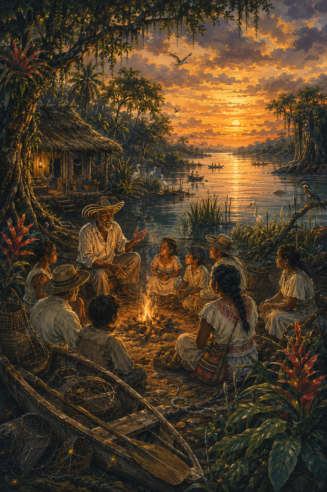
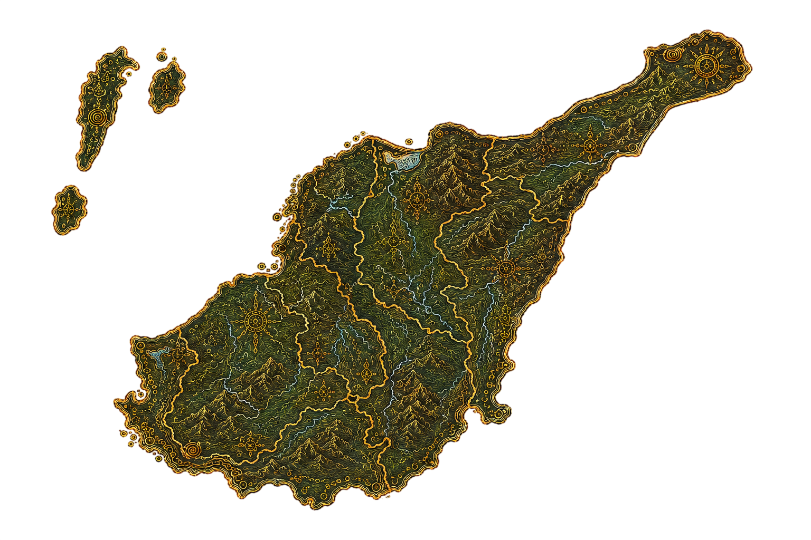
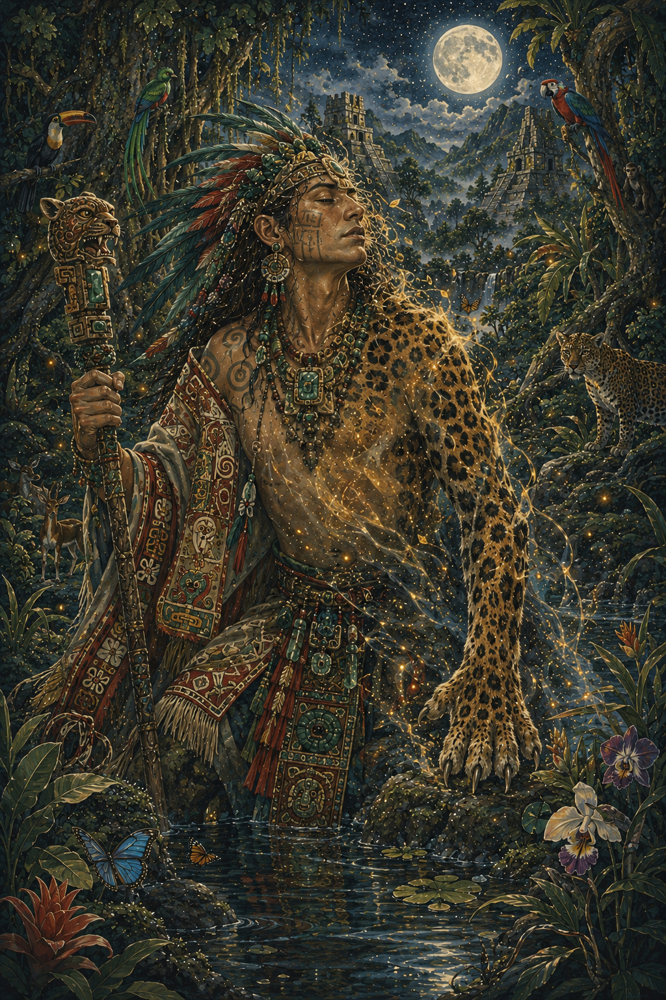

Selkie
Ser del folclore celta que puede transformarse entre foca y humano.
El Hombre Caimán es una de las leyendas más conocidas del Caribe colombiano, especialmente en el río Magdalena y sus alrededores. Relata la historia de un hombre que intentó transformarse en caimán para espiar a las mujeres mientras se bañaban en el río.
Sin embargo, su transformación no fue completa, quedando atrapado entre humano y animal como castigo a su curiosidad y comportamiento.

Según la leyenda, el protagonista acudió a un brujo o chamán para lograr convertirse en caimán durante el día y recuperar su forma humana por la noche.
Sin embargo, el hechizo salió mal, dejándolo atrapado en una forma híbrida que lo condenó a vagar por el río Magdalena.


El Hombre Caimán representa el castigo por la curiosidad indebida y la falta de respeto hacia los demás. Su forma híbrida simboliza el equilibrio roto entre lo humano y lo animal.
En muchas versiones, su presencia inspira temor entre los pescadores y habitantes del río.
La leyenda ha sido transmitida de generación en generación en la región Caribe, convirtiéndose en una advertencia sobre el respeto por la privacidad y las normas sociales.
También forma parte del folclore musical colombiano, inspirando canciones y relatos populares.

El Hombre Caimán es originario de la región Caribe colombiana, especialmente en el departamento del Magdalena y las zonas cercanas al río Magdalena.
Es una de las leyendas más representativas del folclore ribereño del país.


El Hombre Caimán simboliza las consecuencias de los actos impulsivos y el desequilibrio entre lo humano y lo animal dentro del imaginario popular.
También representa la riqueza del folclore del Caribe colombiano y su tradición oral llena de mitos ligados a los ríos.
Ser del folclore celta que puede transformarse entre foca y humano.

Figura mesoamericana con capacidad de transformarse en animal.

Espíritu de transformación y castigo en la mitología algonquina.